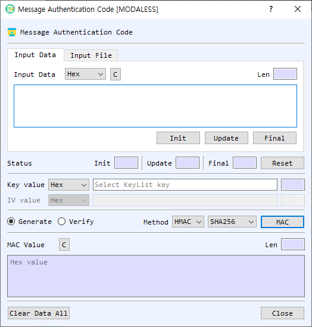

Message Authentication Code (MAC) Dialog Guide
The Message Authentication Code dialog generates or verifies a MAC over text or file data. Open it from Cryptography > Message Authentication Code.

Figure 1. Message Authentication Code dialog. Choose a source, key, method, and algorithm; then generate a MAC or verify a supplied value.
Screen Areas
- Input Data / Input File — Choose to enter message data directly or select a file.
- Input Type — Select the representation for the message input (for example, Hex, String, or Base64). In file mode, Find selects a file and the dialog shows file information and processing progress.
- Init / Update / Final / Reset — Provide incremental MAC processing controls. Init starts the operation, Update feeds the current input, Final completes it, and Reset clears the incremental status.
- Key value — Enter the MAC key and select its representation. If left empty, the dialog offers the symmetric Key List for selecting a key. The length field is calculated automatically.
- IV value — Enter the initialization vector for GMAC. It is disabled for HMAC and CMAC. Select its representation as needed.
- Generate / Verify — Select whether to create a MAC or verify an expected MAC value.
- Method — Select HMAC, CMAC, or GMAC.
- Algorithm — For HMAC, select a hash algorithm. For CMAC and GMAC, select a symmetric cipher algorithm.
- MAC / Verify — Runs the selected operation on the current text or file input.
- MAC Value — In Generate mode, displays the resulting MAC in hexadecimal. In Verify mode, enter the expected MAC value here as hexadecimal. The Len field shows its length.
- Status — Shows Init, Update, and Final results. Reset clears the incremental operation state.
- Clear Data All — Clears input, key, IV, output, file information, and status.
- Close — Closes the dialog.
Generate a MAC from Text
- Select Input Data and enter the message data using the selected Input Type.
- Enter the key and choose its representation, or leave the key empty and select one from the symmetric Key List when prompted.
- Select a Method and Algorithm.
- For GMAC, enter an IV. HMAC and CMAC do not use the IV field.
- Select Generate.
- Select MAC. The generated MAC is displayed in hexadecimal in MAC Value.
Verify a MAC from Text
- Enter the message data, key, method, and algorithm as described above.
- For GMAC, enter the IV used to generate the expected value.
- Select Verify.
- Enter the expected MAC in MAC Value as hexadecimal.
- Select Verify to calculate and compare the value. The status or message box reports whether verification succeeded.
Process a File
- Select Input File, select Find, and choose the file.
- Select the method, algorithm, key, and (for GMAC) IV.
- Select Generate or Verify, then select the operation button.
- Monitor the progress and read-size indicators while the file is processed.
Methods
| Method | Algorithm selection | IV |
|---|---|---|
| HMAC | Hash algorithm | Not used |
| CMAC | Symmetric cipher algorithm | Not used |
| GMAC | Symmetric cipher algorithm | Required |
Incremental Processing and Notes
- Init, Update, and Final can be used to process data in stages. Enter a block in the input area and select Update for each block, then select Final.
- The key and IV length fields update automatically.
- Use matching message data, key, method, algorithm, and IV when verifying a MAC.
- Keep the key secret. Anyone with the key can generate valid MAC values.